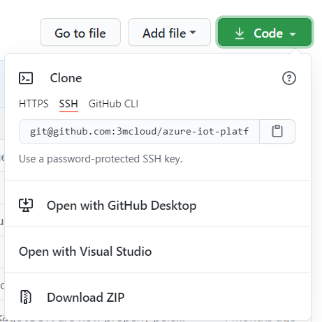
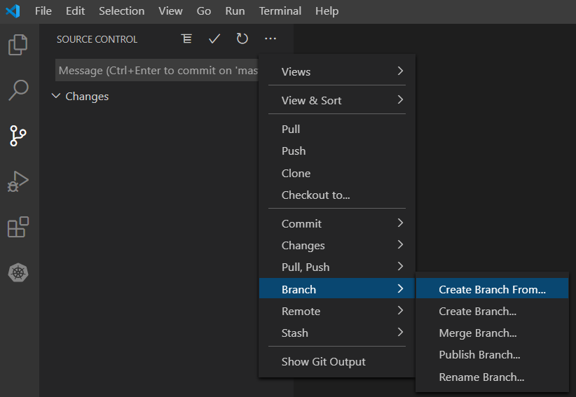
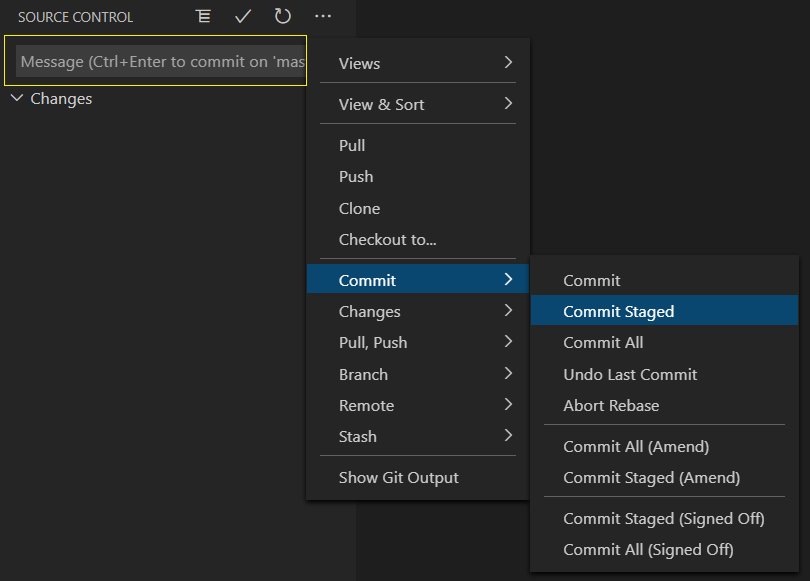
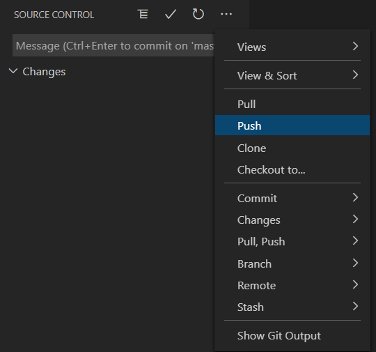
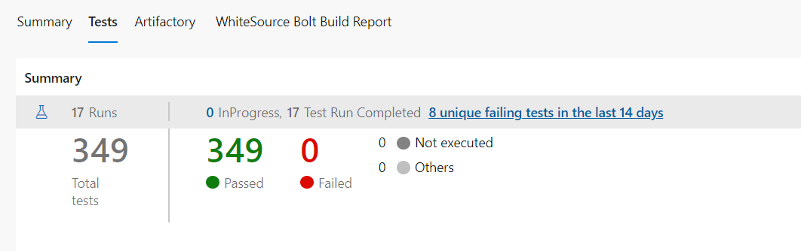
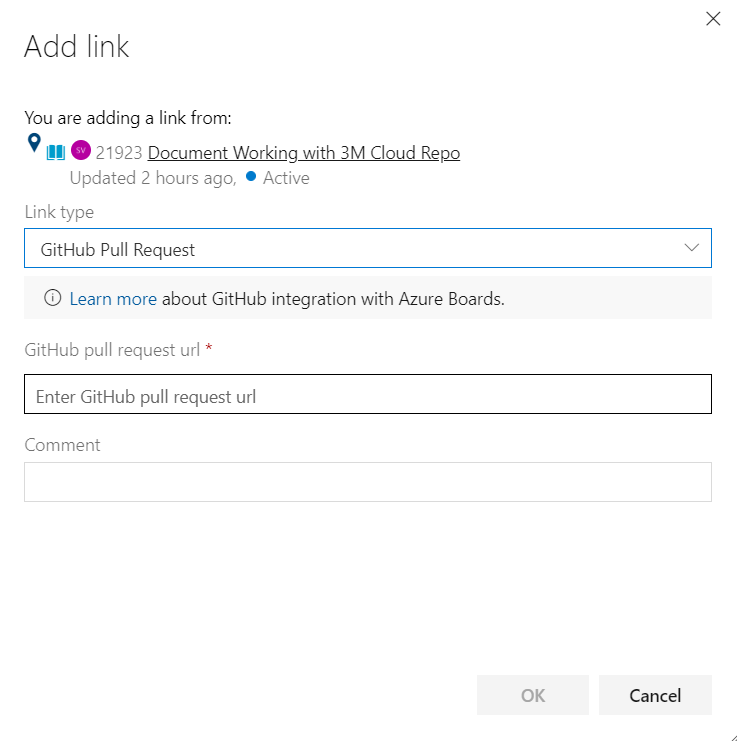

Working with 3M Cloud Repository
This documentation is about understanding the process of cloning the 3M cloud repository outside the 3M network to local machines and working with it.
- Connect to Github with SSH
- Clone solution
- Creating new working branch
- Commit and push the branch
- Raise a pull request
- PR Approval
Connect to Github with SSH
Using the SSH protocol, you can connect and authenticate to remote servers and services. Use the steps below for connecting to github with SSH
Check for existing keys/ Generate new key
Check for existing keys: Before generating a new SSH key, you can check if you have any existing keys from here. Generate a new key if you don't have an existing public and private key pair, or don't wish to use any that are available to connect to GitHub.
Generate a new SSH key
Generate a new SSH key: If there is any existing SSH key, this step can be skipped. Follow the steps to generate a new key.
Add SSH key to ssh-agent
Add SSH key to the ssh-agent: Once you have the key ready, follow the steps here to add your SSH key to the ssh-agent.
Add SSH key to Github account
Add SSH key to Github account: Once the key is added to the ssh-agent, login to Github and follow the steps here in order to add your SSH key to Gitub account.
Testing the SSH connection
Testing the SSH connection: After you've set up your SSH key and added it to your GitHub account, you can test your connection by following the steps here
Clone Solution
To clone the solution, do the following:
Login to Github
Navigate to 3M cloud azure-iot-platform-dotnet repository
Click on Code button as shown below, switch to SSH and copy the path to clone 
Clone the repository with this path from VS code/Visual Studio/Git bash or any other command liner
Creating new working branch
Create a new branch from master branch either from terminal or from Source Control window/palette
Ex: Creating a new branch in VS Code:
1. Go to Source Control(Ctrl+Shift+G)
2. Click on Views and More Actions
3. Go to Branch => Create Branch From
The naming convention should be followed based on team guidelines for different work item types(user story/bug)
Ex: Branch name for a user story: userstory-<userstorynumber>-<title/shortdescription>The new branch is setup and always make sure to keep your branch upto date before raising a pull request
Commit and push the branch
Once the changes are done, go to pending changes and stage the changes to check-in
Note: Make sure to get latest/keep the branch in sync with master before committing in order to prevent any conflicts due to changes from the upstreamEnter the commit message with information about your changes and commit your changes
Ex: Committing staged changes in VS Code: Once the changes are committed push the branch to origin
Ex: Push branch in VS Code: 
Raise a pull request
- Login to VM
- Open the browser and navigate to pull requests tab
- Click "New pull request"
- Select base:master and compare:<your_branch_name>
- If required, review the commits and files changed
- Give a brief description about the changes under Conversation tab
- Add the revieweres if required and create the pull request
Note:
For more information on Naming branches and Pull requests, check this
PR Approval
- Notify others for review: Either post on Wiki or in a team's Communication channel regarding the Pull request
- Address the changes requested or any merge conflicts
- If a build runs with your PR, make sure that the checks are 100% passed. This can be viewed under "Checks" section.
- Make sure that the tests are 100% passed(if there are any). Troubleshoot the errors if there are any. You can verify these under Tests tab in the build. 
- If the build fails, go through the log and address the issue/inform the team
- If all the checks are passed, the PR is ready for approval.
- Update the work item
- Set the status as Review
- Add discussion notes and attach any files if required for reference
- Link the Pull request. For this,
- Go to the respective work item
- Under Development section, select Add link
- Add link pop-up opens up
- Select the link type as "GitHub Pull request"
- Enter the Pull request url under "Github pull request url" field
- Add a comment if required and click "Ok" 
- Save the work item
- Once the deployment to Development environment is completed:
- Test your changes
- Add appropriate notes
- Mark the work item as resolved